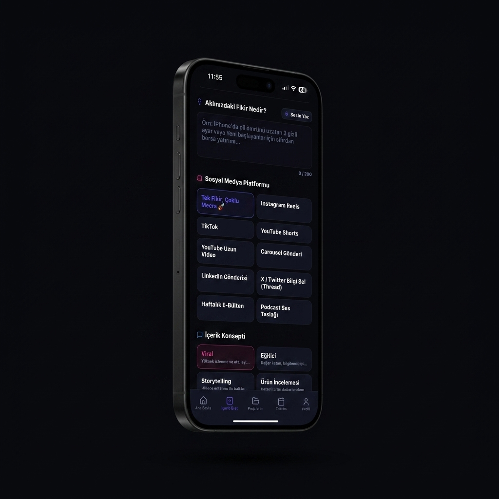
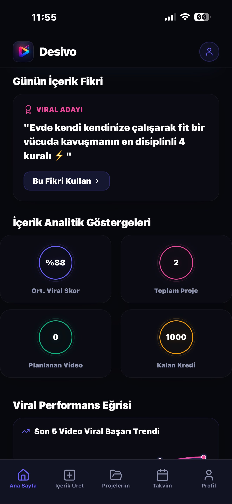
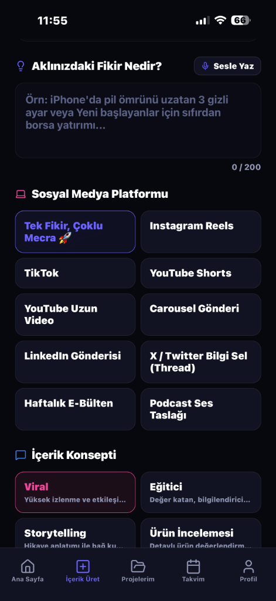
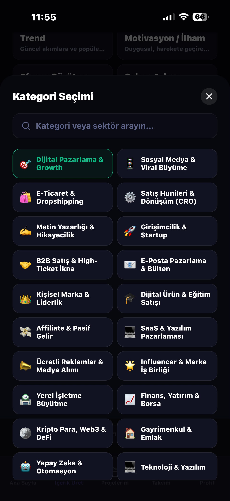
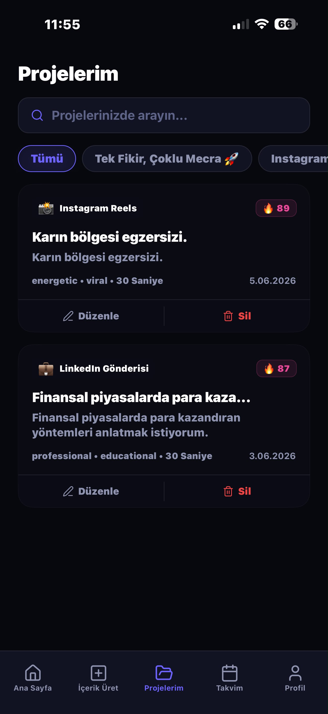
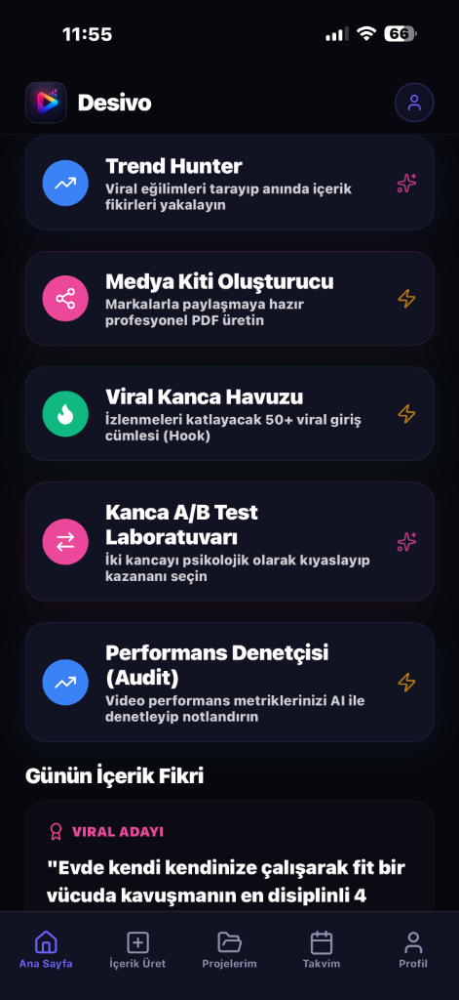
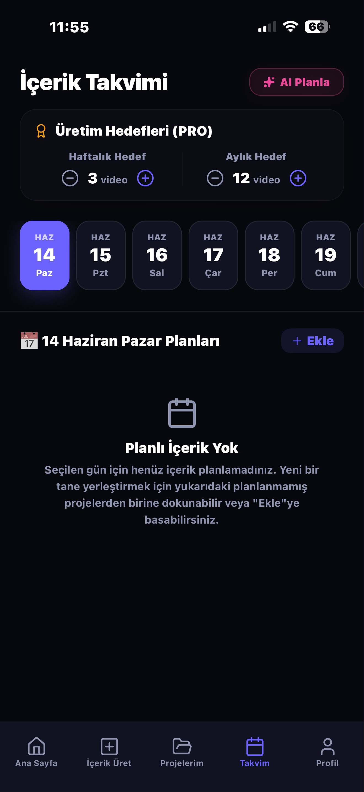
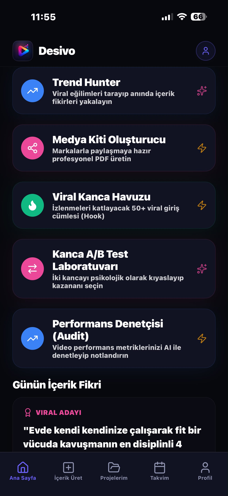

Desivo, tek bir fikri dakikalar içinde yüksek dönüşümlü Reels, TikTok ve YouTube senaryolarına dönüştürür. Sinirsel kanca analizleri, otomatik teleprompter rehberi ve CTR optimizasyonlu araçlarla sosyal medyada büyümenizi fütüristik bir boyuta taşıyın.

Desivo, içerik üretiminizin her aşamasını hızlandıran ve profesyonelleştiren 11 bağımsız yapay zeka modülü içerir.
Yapay zeka; PAS, AIDA ve Storytelling gibi satış kanıtlı formülleri kullanarak video senaryolarınızı anında sahneler halinde hazırlar.
İki video kancasını nöro-pazarlama algoritmalarıyla yarıştırın, izleyiciyi ilk 3 saniyede durduracak kazanan kancayı belirleyin.
Instagram ve LinkedIn için marka logonuz ve renklerinizle uyumlu fütüristik PDF kaydırmalı (Carousel) slaytlar tasarlayıp indirin.
Girdiğiniz tek bir konudan aynı anda video senaryosu, sıralı X dizisi (thread) ve profesyonel LinkedIn gönderisi türetin.
Kamera karşısında ezber yapmadan konuşun. Konuşma hızınıza göre otomatik akan teleprompter ile pürüzsüz kayıtlar üretin.
Sosyal medyadaki popüler altyazı şablonlarını simüle edin, kritik kelimeleri neon renklerle vurgulayarak izlenme sürelerini artırın.
Yapay zeka ile video izleyici elde tutma (retention) grafiklerinizi simüle edin, kritik drop-off saniyelerini ve düzeltici çözümleri anında görün.
MarkaOS altyapısı sayesinde 5 farklı müşterinizin/markanızın kitle DNA'sını ve ses tonunu ayrı profillerde yönetin.
Sosyal medyadaki popüler akımları ve viral konu eğilimlerini gerçek zamanlı takip ederek izlenme potansiyeli en yüksek içerik fikirlerini yakalayın.
Yapay zeka ile üretilen video kapakları ve slaytları üzerine marka logolarınızı, stickerları ve metinleri sürükleyip bırakarak özelleştirin.
Oyunlaştırılmış Creator Streak Tracker ile günlük içerik üretim serinizi takip edin, üretim alışkanlığı kazanın.
Fikirlerinizin viral içeriklere dönüşme yolculuğu. Tüm yapay zeka modüllerimiz birbiriyle entegre çalışarak tam bir içerik stüdyosu oluşturur.
Günün en trend içerik fikrini yakalayın ve video başarı eğrilerinizi takip edin.
Fikrinizi girip platform ve içerik konsepti seçimiyle video senaryolarınızı anında oluşturun.
Dijital pazarlamadan dropshipping'e 20+ kategori arasından markanızı konumlandırın.
Reels, LinkedIn ve diğer tüm mecralar için ürettiğiniz projeleri tek panelde saklayın.
Trend Hunter, Medya Kiti, Kanca Havuzu ve Performans Denetçisini anında başlatın.





Videolarınızın ilk 3 saniyesini kurtarın. İki farklı video girişini (kancasını) yapay zekaya yarıştırın ve kazananı anında görün.
Desivo, sosyal medya algoritmalarını ve izleyici psikolojisini analiz ederek içerik üretim sürecinizi büyüme odaklı bir veri merkezine dönüştürür.
Yapay zeka asistanı ve platform şablonları sayesinde, normalde saatler süren senaryo yazımı ve slayt tasarımı işlemlerini saniyeler içinde tamamlayın.
Hook A/B Test Laboratuvarı ve viral kanca havuzu ile videolarınızın ilk 3 saniyesini optimize edin, izleyicileri ekranda kilitleyin.
Çoklu Marka OS kiti sayesinde yapay zeka, içeriklerinizi her zaman markanızın benzersiz ses tonu, kitle DNA'sı ve logosuna sadık kalarak hazırlar.
Konuşma hızınıza göre otomatik akan akıllı teleprompter sayesinde kamera karşısında takılmadan, tek seferde pürüzsüz kayıtlar alın.
Desivo hakkında merak ettiğiniz tüm soruların detaylı yanıtlarını aşağıda bulabilirsiniz.
Desivo ile sosyal medya stüdyonuzu cebinizde taşıyın. İşte fikirlerinizi viral içeriklere dönüştürme süreci:
Uygulamayı açın ve aklınızdaki içerik konusunu girin ya da yapay zekanın size trendlere uygun, yüksek etkileşimli viral fikirler üretmesine izin verin.
Platforma (Reels, TikTok, YouTube, X, LinkedIn) özel yazım tonunu ve formülünü seçin. Yapay zeka, kitleyi ilk 3 saniyede durduracak kazanan kancalar ve senaryoyu anında hazırlasın.
Yapay zekanın stüdyo kalitesinde hazırladığı içeriği kopyalayın, teleprompter eşliğinde pürüzsüzce kaydedin veya otomatik slaytlar halinde indirip hemen paylaşın.
Desivo, fikir bulmaktan senaryo yazmaya, A/B testlerinden akıllı teleprompter kaydına kadar tüm süreci tek bir yerde birleştirir.
Aklınızdaki fikri girin, hedef platformu (Reels, TikTok, YouTube Shorts, LinkedIn, X Thread) seçin. Yapay zeka konseptinize özel profesyonel viral senaryoyu saniyeler içinde hazırlasın.

Sosyal medyadaki popüler akımlara uygun, izleyicinin dikkatini çekecek günlük fikirler alın. Yapay zeka dehasının video fikrinize verdiği potansiyel viral skorları real-time takip edin.

AI Creator Assistant, İçerik Dönüştürücü, Analiz Laboratuvarı, Thumbnail Studio, Slide Engine ve Teleprompter gibi gelişmiş araçlarla tüm içerik üretim sürecinizi tek bir merkezden yönetin.
Sosyal medyadaki popüler altyazı şablonlarını ve animasyonlu kelime vurgularını simüle edin. Anahtar kelimeleri neon renklerle ön plana çıkararak izlenme sürelerini (retention) zirveye taşıyın.
Sosyal medyada içerik üretim biçimini tamamen Desivo ile değiştiren bazı içerik üreticilerinin yorumları.
"Reels için fikir bulmak ölüm gibiydi. Her gün saatlerce ne çeksem diye düşünüyordum. Desivo’yu indirdiğimden beri sadece konuyu yazıyorum, 5 saniyede senaryo önüme geliyor. Özellikle kanca (hook) önerileri sayesinde videolarımın ilk 3 saniye elde tutma oranı %45 arttı. Harika bir iş."
"Finans videolarında izleyiciyi tutmak çok zordur, sıkılıp geçerler. Desivo'nun A/B test aracını kullanarak kancaları denemeye başladım. En son paylaştığım video 1.2 milyon izlendi ve sadece o videodan 8 bin yeni takipçi geldi. Teleprompter özelliği de ezber yapma derdini tamamen bitirdi."
"Slide Engine (Slayt Tasarlayıcı) modülü LinkedIn karusellerim için kurtarıcı oldu. Eskiden Canva’da saatlerimi harcadığım tasarımları şimdi Desivo’da hazır şablonlarla 2 dakikada PDF olarak indiriyorum. Ajans paketi sayesinde müşterilerimin marka kitlerini de tek panelden yönetebiliyorum."
"Eğitim içerikleri üretiyorum ve her videoda onlarca teknik detayı akıcı bir şekilde anlatmam gerekiyor. Desivo'nun Teleprompter özelliği sayesinde artık ezber yapmakla vakit kaybetmiyorum. Kameraya bakarak sanki doğaçlama anlatıyormuş gibi pürüzsüz kayıt alabiliyorum. Üretim hızım üç katına çıktı diyebilirim."
"TikTok’ta algoritmayı çözmek zor ama Desivo’nun Trend Avcısı aracı sayesinde o gün hangi konuların yükseleceğini önceden tahmin edebiliyorum. Trende uygun ürettiğim son 3 videonun ikisi keşfete düştü. Benim gibi bireysel içerik üreten herkesin telefonunda mutlaka olması gereken bir uygulama."
"Farklı platformlara içerik üretmek tam bir işkenceydi. Bir Reels çekiyordum, sonra onu X thread'ine dönüştürmek, LinkedIn'e göre yazmak saatlerimi alıyordu. 'Tek Fikir, Tüm Mecralar' modülü sayesinde tek bir konseptten 4 platform için de hazır çıktı alıyorum. İnanılmaz zaman kazandırıyor."
Desivo'nun gücünü bütçenize en uygun paketle açın. İhtiyacınıza göre dilediğiniz an yükseltin veya iptal edin.
Desivo'yu şimdi akıllı telefonunuza indirin ve yapay zeka destekli üretimin lüks ve hızını hissetmeye başlayın.
Sorularınız, görüşleriniz veya iş ortaklığı teklifleriniz için formu doldurabilirsiniz.